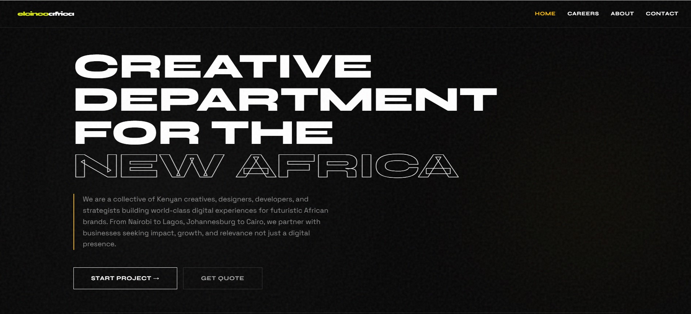

01 / LUKUMJINI
Architecture of Commerce
A premium e-commerce experience designed for the creative fashion brands of Nairobi curating the new wave of Nairobi's design avant-garde. A digital showroom for the bold. Marrying architectural minimalism with high-conversion UI.

02 / ELCINCO Africa
Organization Website
Defining the digital identity for Elcinco Networks. A hub where brand strategy meets technical performance.